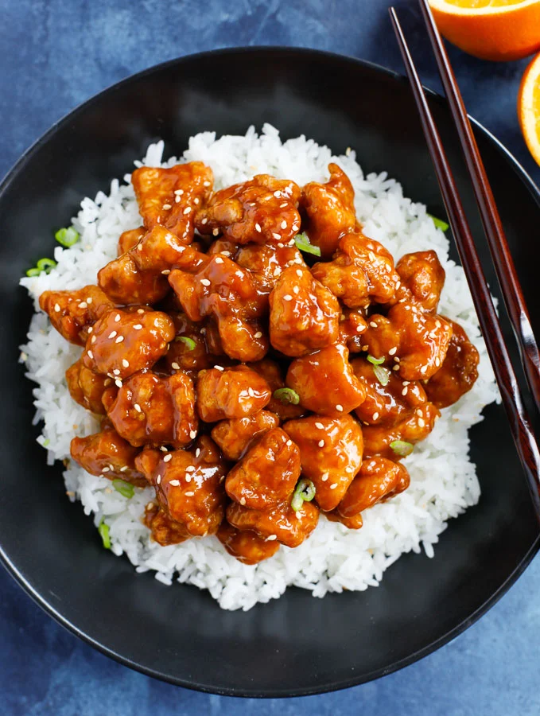

Orange Chicken Recipe

Description
If you've enjoyed this classic Chinese take-out meal from Panda Express or
P.F. Chang's, you're gonna love this easy homemade recipe. This is an easy
and quick recipe that can be made on a weeknight.
This is has become an absolute staple in my house. I love this recipe and
tell everyone I know how tasty it is. After hyper fixating on this meal when
I first discovered it, I'm still making it every week years later.
Ingredients
For the Chicken
- 6 Chicken Tenders
- 1/4 cup all purpose flour
- 1 tbsp. corn starch
- 1/2 tbsp. onion powder
- 1/2 tbsp. ginger powder
- 1/2 tbsp. smoked paprika
- 1/2 tbsp. black pepper
- 1/2 tbsp. salt
- Olive oil for frying
- White vinegar for cleaning the chicken
- 1/2 cup white rice (for the side dish)
Orange Chicken Sauce
- 3/4 cup orange juice
- 1-1/2 tbsp. corn starch
- 2 tbsp. sesame oil
- 3 tbsp. low sodium soy sauce
- 1-1/2 tbsp. rice vinegar
- 3 tbsp. brown sugar
- 1/2 tbsp. ginger powder
- 1/2 tbsp. garlic powder
- 1/2 tsp. black pepper
- zest of 1 orange
- Chili flakes optional
Instructions
- Dice the chicken into 1 inch cubes and place in a bowl.
- Fill the bowl with white vinegar to a little above the chicken. Swirl the chicken around
and then let it soak in the vinegar for 3 minutes.
- While the chicken soaks, mix the flour, corn starch, onion powder, paprika, ginger powder,
black pepper, and salt in a measuring cup. Next, bring the oil in your pan up to medium
heat.
- After that, start to wash your rice in a separate bowl at least 5 times and set aside drained.
- Drain your chicken in a colander and rinse the bowl out, then place the chicken back in
the bowl. Pour your flour mixture in and mix it all up, then add the coated pieces to your
frying pan. Fry the chicken until golden brown, about 4 minutes.
- Transfer the clean rice to a pot. Fill with water about a cm over the rice. Add salt to
the water (not too much). Place on high heat until it starts boiling, then lower the heat
to low and cover for 10 minutes.
- Meanwhile, whisk all the sauce ingredients together in the measuring cup or a bowl
(I add the chili flakes as the sauce is cooking to adjust the heat).
After removing the chicken from the frying pan, pour the sauce into the pan and cook on
low-medium heat and stir until it thickens up.
- Transfer the fried chicken to the sauce and mix to coat well. Transfer rice into bowls for
eating and cover with portion of sauced chicken.
- Garnish with (optional) sesame seeds and chopped green onions.